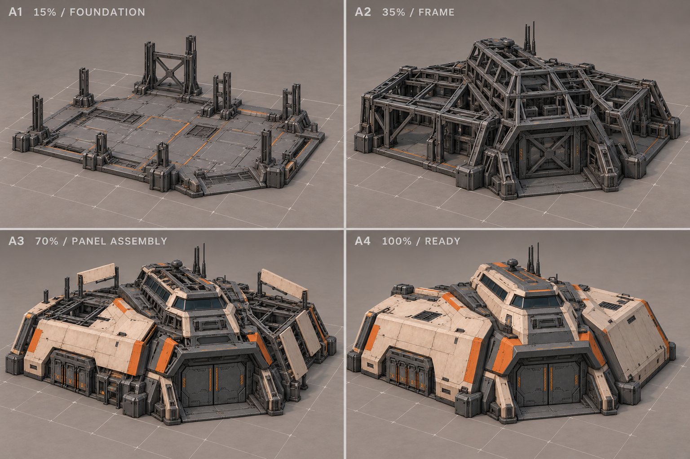
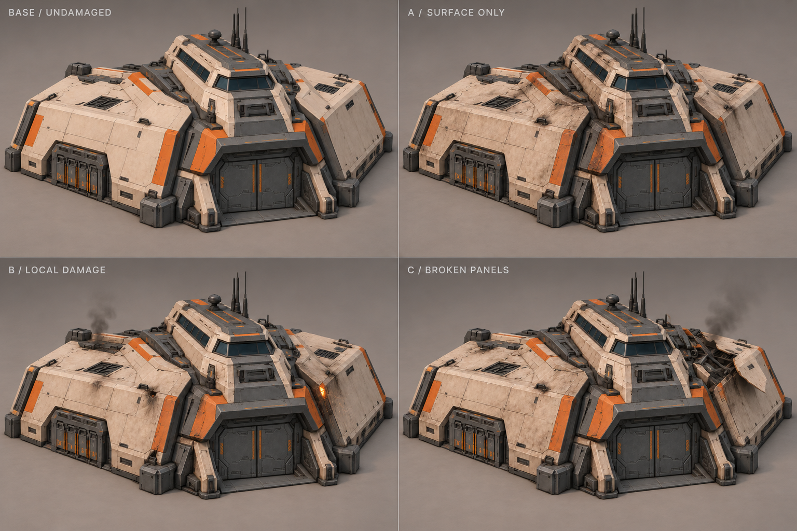

Люди · строительство и повреждения
Первый визуальный проход: три способа стройки и три способа показать повреждения на выбранном штабе C. Варианты ещё не утверждены. Повреждения Резонанса — отдельный будущий проход.
Предлагаю A для стройки + B для повреждений: физически читаемый монтаж крупных частей, целый рабочий силуэт, локальная копоть и небольшие эффекты. Дополнительные полные модели на каждый процент прогресса/HP не нужны.
Строительство
Полная раскадровка выбранного варианта

Повреждения живого здания
Здесь A/B/C — разные способы отображения повреждений, а не три последовательных порога HP. Во всех вариантах штаб ещё жив: вход и рабочие узлы сохраняются.
Сравнить все варианты повреждений рядом

Что делать шейдером, а что моделировать
| Элемент | Реализация предложения |
|---|---|
| Копоть, сколы краски, следы жара | Материал и маски. Отдельная повреждённая модель не требуется. |
| Дым, искры, короткая реакция на попадание | Отдельные эффекты в подготовленных точках; не текстура здания. |
| Монтаж панелей | Крупные группы исходной модели с короткими локальными движениями. Один внутренний каркас. |
| Настоящий пролом, толщина оторванной стены | Подготовленная геометрия и закрытые внутренние поверхности. Один шейдер этого не создаст. |
| Состояние стройки и повреждений | Прогресс и HP из игры. Проигрывание эффекта не определяет готовность и не меняет правила. |
Для A + B предлагается одна готовая модель, один упрощённый каркас, несколько монтажных групп, маски и 1–2 локальные точки эффектов. Под конкретные здания нужны свои порядок монтажа и расположение сервисных зон; таблица охватывает весь ростер людей.
Изображения созданы встроенным imagegen; точные промпты и источники. Здесь нет готовых материалов, рига или реализации Unity. Нулевое HP и финальное уничтожение — отдельная последовательность; повреждённый живой штаб не подменяет руину.